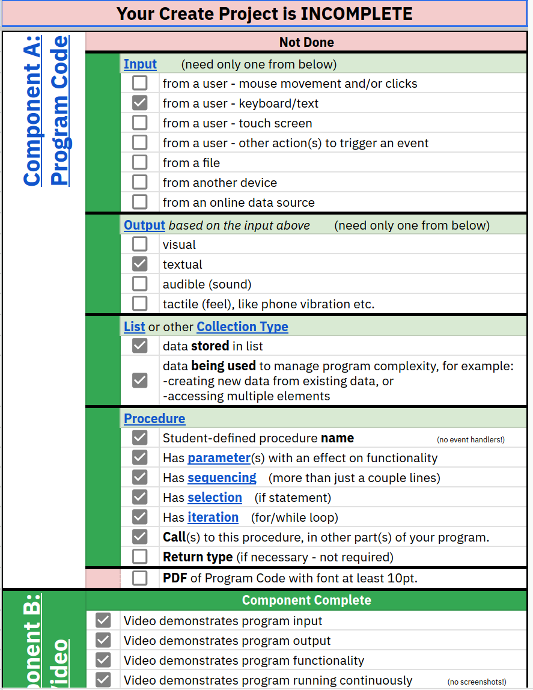

Feb 19. 2026
Left to their own devices
Observer: Aiden Thomas
Teacher: Eric Baez
Reflections on Classroom Observation
During this week, Eric emailed me a detailed set of expectations for his students. These expectations essentially served as the submission criteria that students must follow when submitting their work to the AP Computer Science Principles (APCSP) program. Loften High School operates on a semester-based schedule, which differs from the traditional academic calendar that the AP program follows. This scheduling discrepancy creates a significant challenge for Eric and his students. Since the APCSP course concludes after one semester, students who are now enrolled in his Video Game Design class must continue building their APCSP portfolios outside of their regular coursework. I observed an interesting intersection between the two courses: students were actively utilizing programming techniques and skills they had learned in Video Game Design and applying them to their APCSP portfolio submissions. This demonstrated how the knowledge from one course can effectively transfer to and enhance work in another, even when completed outside the standard curriculum timeline.
Problem 0.1.
Adaptabilityproblem-label
-
(a)
Below is an image of the showcase assignment.

Figure 1: A diagram of what is happening in function.
This observation led me to reflect deeply on the pedagogical possibilities of integrating materials and concepts from other courses into the current course being taught. By strategically incorporating cross-curricular content, we can create opportunities for students to explore and apply principles that are not commonly covered in the immediate classroom setting. This approach would allow students to draw connections between different subject areas, enriching their learning experience by exposing them to a broader range of concepts and methodologies. Furthermore, this integration could help students develop a more holistic understanding of how different disciplines intersect and complement one another. By leveraging resources and knowledge from multiple courses, we can provide students with a more comprehensive educational experience that extends beyond the traditional boundaries of a single course curriculum.
In the future I plan to utilize a better form of assignment creation and modulation, to allow some assignments to feel a little bit more useful for students just leanring about computers.
Comfortability: 7/10
I chose this numeric, simply because I still see that I need to lower my expectations with students who have been doing programming for a smaller part of time that the people in college.